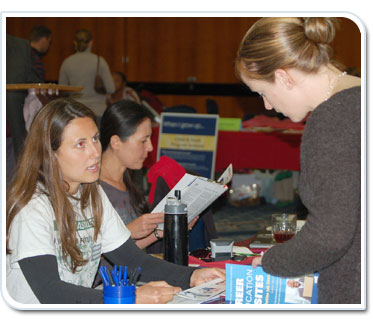

Finally, you’ve made it to the recruiting event! All your research and preparation has paid off! You look good, you feel ready. Now what?
This lesson will guide you through the do’s and don’ts of recruiting, including how to represent yourself and the agency properly; how to conduct on-site interviews and guide a potential candidate in what to expect from the application process; and what you should do following the event.
This lesson will take approximately 25 minutes to complete.